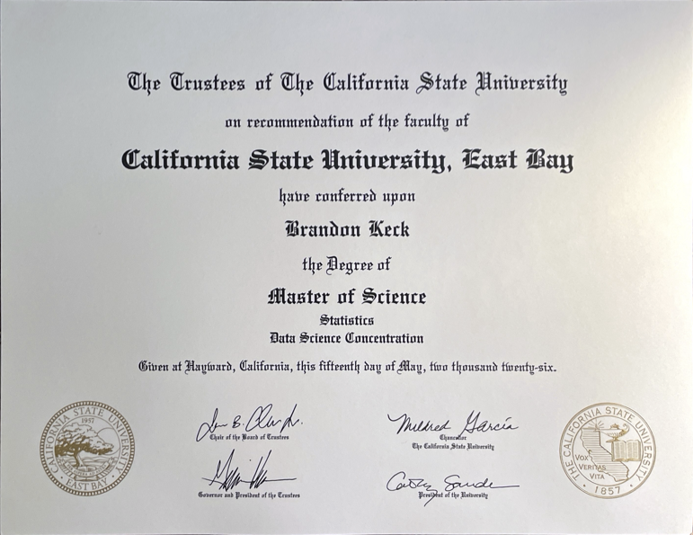

I'm a
Brandon Keck
Statistics is how I make sense of noisy, real-world problems. I hold a B.S. in Statistics (minor in Mathematics) from Sonoma State University and an M.S. in Data Science from CSU East Bay, and I spend most of my time in R, Python, SQL, Power BI, and Tableau — moving from raw numbers to a model or a chart someone can actually act on.
Based inCalifornia
FocusApplied statistics & data visualization
ToolsR, Python, SQL, Power BI, Tableau
Selected Work
Two recent projects — one predicting survival on the Titanic, one predicting fantasy baseball value from real MLB data.

Education
Sonoma State University

B.S. Statistics, Minor in Mathematics
CSU East Bay

M.S. Data Science

Technical Skills
Languages
Analytics & ML